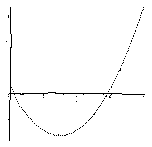

Find the largest real k such that if a, b, c, d are positive integers such that a + b = c + d, 2ab = cd and a ≥ b, then a/b ≥ k.
Solution
Answer: k = 3 + 2√2.
A few examples of such a, b, c, d are:
2 + 12 = 6 + 8, 2.2.12 = 6.8, so a/b = 6 2 + 15 = 5 + 12, 2.2.15 = 5.12, so a/b = 7.5 3 + 20 = 8 + 15, 2.3.20 = 8.15, so a/b = 6.67We have (a+b)2 - 8ab = (c+d)2 - 4cd, so (a/b)2 - 6(a/b) + 1 = ((c-d)/b)2 ≥ 0. The plot of x2 - 6x + 1 is shown below. It has zeros at x = 3 - 2√2 < 1 and 3 + 2√2 = 5.83. So since a/b ≥ 1, we must have a/b > 3 + 2√2.

The harder part is showing that we can get as close as we like to 3 + 2√2 and hence that k = 3 + 2√2. The idea is to show that we can make (c-d)/b as small as we like.
Note first that (a+b)2 - 4ab = (c+d)2 - 2cd, so (a-b)2 = c2 + d2. In other words, a-b, c, d is a Pythagorean triple. It is well-known that r2 + s2, r2 - s2, 2rs are such triples for any integers r, s. Then we have a+b = c+d = r2 + 2rs - s2. Hence a = r2 + rs, b = rs - s2. It is now easy to check that a = r2 + rs, b = rs - s2, c = r2 - s2, d = 2rs satisfy a + b = c + d, 2ab = cd.
Suppose we specialise to c - d = 1 (then if we could get arbitrarily large b we would be home). That requires r2 - s2 - 2rs = 1, or (r - s)2 - 2s2 = 1. We recognise that as a Pell equation. It has a solution r - s = 3, s = 2. But if (R, S) is a solution to x2 - 2y2 = 1, so is (3R+4S, 2R+3S). So we can get arbitrarily large r - s and s such that c - d = 1. Then b = rs - s2 = (r - s)s, which can therefore be made arbitrarily large as required.
For example, r - s = 3, s = 2, gives r = 5, so a = 35, b = 6, c = 21, d = 20. Then a/b = 5.8333. The next solution is r - s = 17, s = 12, so r = 29, so a = 1189, b = 204, c = 697, d = 696 and a/b = 5.828431 (cf 3 + 2√2 = 5.828427).

© John Scholes
jscholes@kalva.demon.co.uk
14 Oct 2002